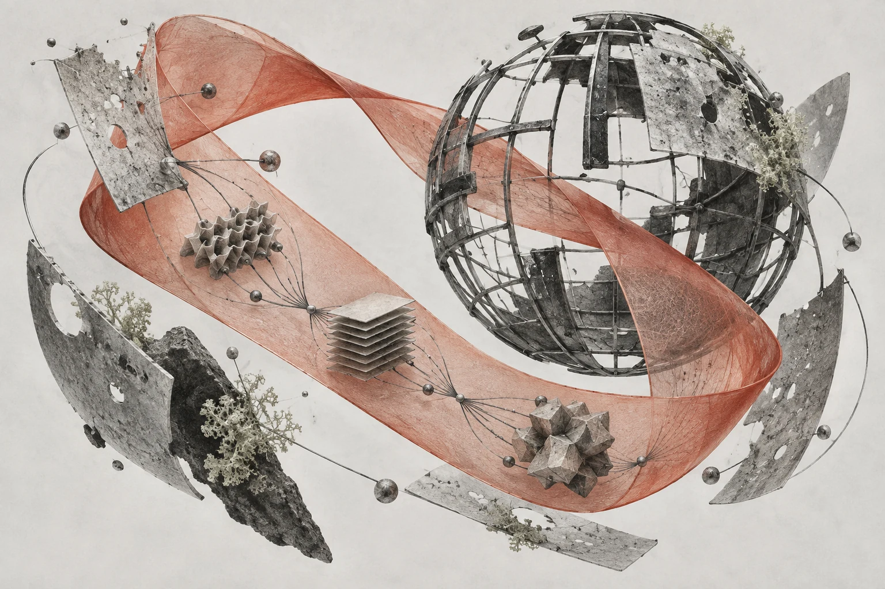
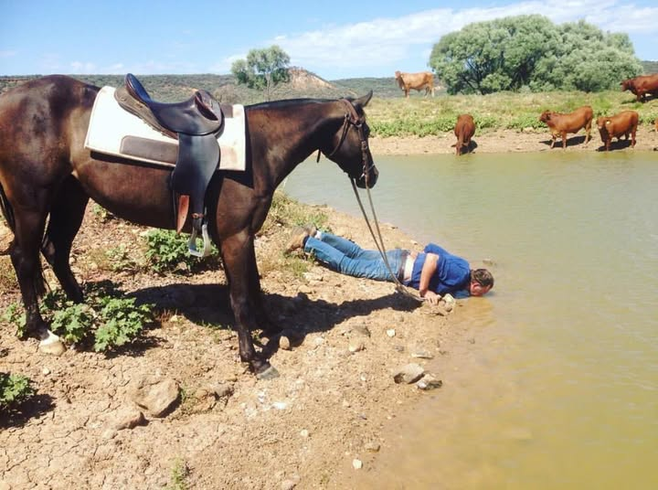

A personal field guide
Systems & databases.
The notes I keep while learning how computers work. Read a path, try it on your own host, come back when you need it.
Resume reading

“त्यज दुःखमात्मनः — संसारेण तव क्लेशं समूलं नाशय।
संस्कारशुद्धेन त्वं पुनर्जन्मं प्राप्नुहि।
इदानीं ते नवजीवनस्य प्रभातः सम्प्रारभते॥”“Cast off the suffering of your soul —
Let the torment of your worldly existence be destroyed from its very roots.
With your purified essence, be reborn anew.
Now begins the dawn of your new life.”